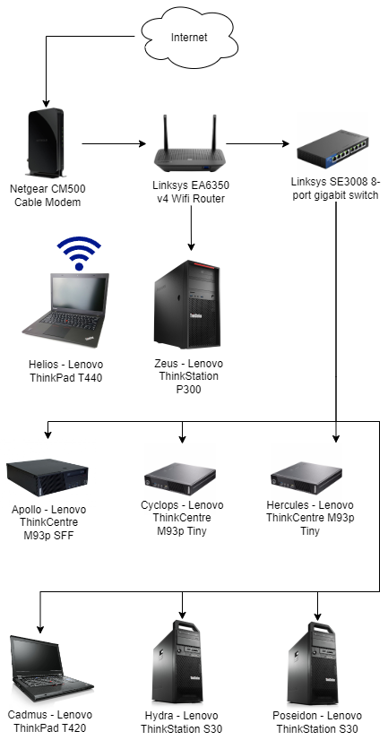
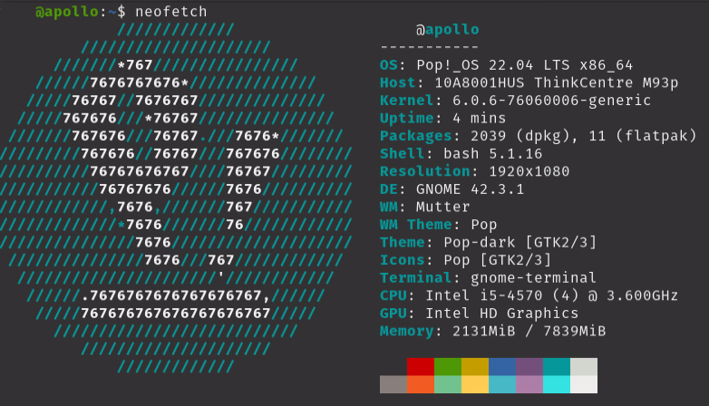
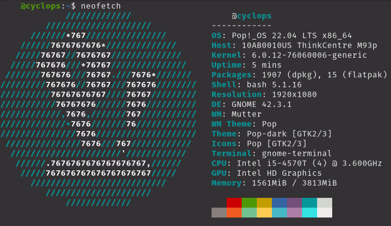
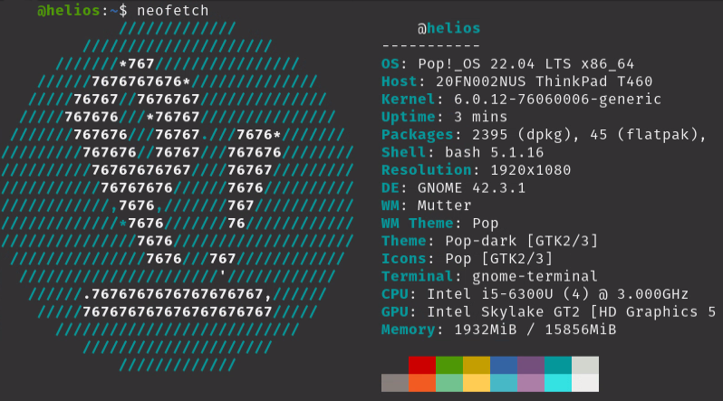
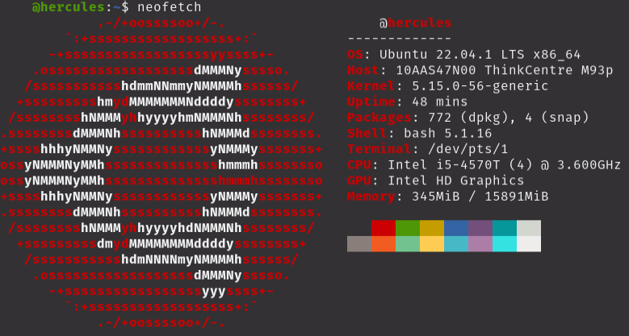
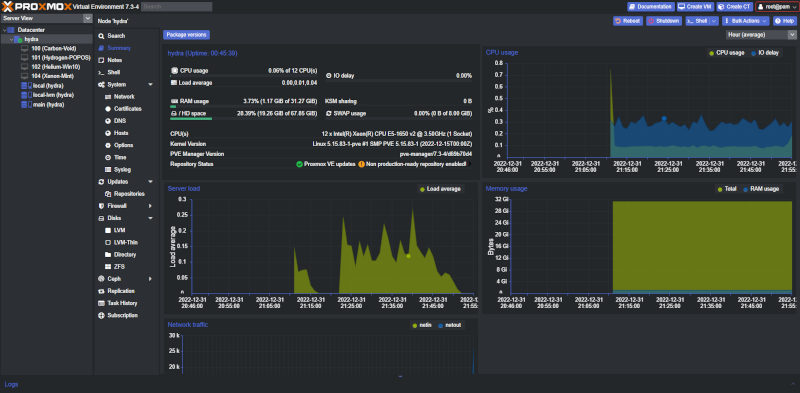
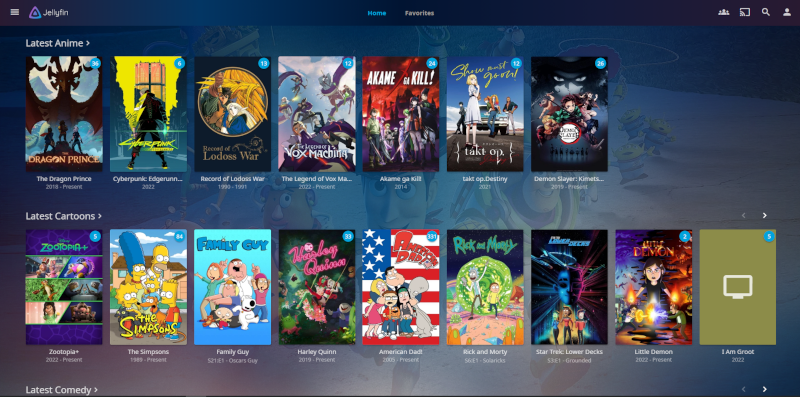
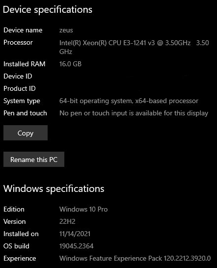

Homelab Tour 2023
2023-01-01
I'm using consumer grade equipment with Linux to self-host many services. Below is a network map of my homelab.

Below is a list of each PC with its specs and functions.
Apollo

OS drive: 120 GB
Data drive: 8 TB
I use it with Samba as a basic NAS to backup and share files on my local network.
Cadmus

OS drive: 230 GB
Data drive: 500 GB
Used for secure downloads and processing data.
Cyclops

OS drive: 230 GB
This is my headless design lab. Used for UX/UI Design and Graphic Design.
Helios

OS drive: 230 GB
This is my daily Linux laptop. Used mainly for email and web browsing.
Hercules

OS drive: 200 GB
This is running Ubuntu Server with Docker, Docker Compose, and Portainer. I use this to experiment with container services.

It is primarliy running a small NextCloud instance.
Hydra

OS drive: 200 GB
Data drive: 8 TB
This hypervisor is used to spin up virtual operating systems. I like to experiment with different Linux distros.
Poseidon
OS drive: 120 GB
Data drive 1: 4 TB
Data drive 2: 8 TB
Data drive 3: 4 TB
This is my Jellyfin media server. I'm a cartoon nerd.

Zeus

OS drive: 500 GB
Data drive: 1 TB
While I'm not a fan of Microsoft Windows. I keep it installed for gaming. Mostly I play modded Minecraft through the FTB Launcher. Which sucks because of the ads. I'm thinking of going back to MulitMC.
My goal is to build a low-power consumption rack server that's nearly silent.
Then I'd like to run everything through Proxmox as either Virtal Machines or containers. With proper raid array redundancy and backups.
As it stands I do not leave my homelab running due to high energy costs.
Resources
Here's a few website that will give you more information on setting up your own homelab.